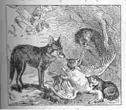
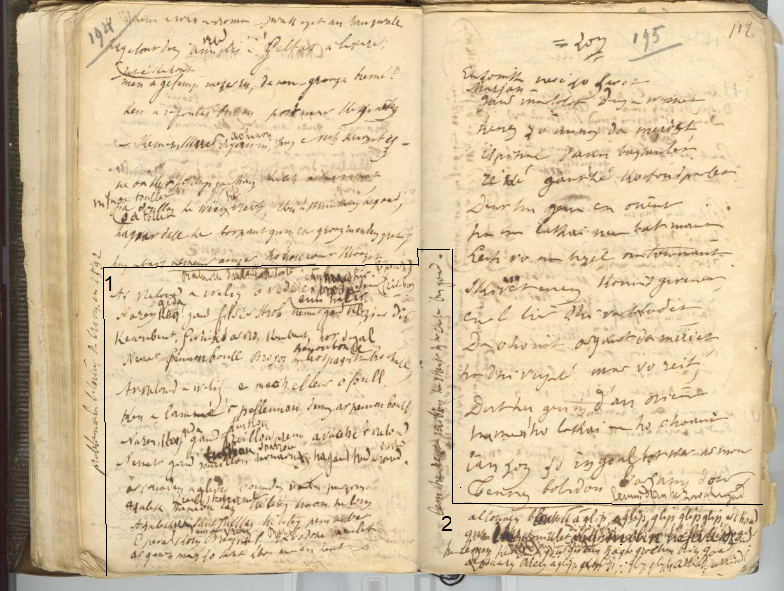

Alan Al Louarn

Ton
1. Al louarn
barveg
a glip, glip, glip, glip er c'hoad;
Glip, glip, glip, glip, glip er c'hoad!
Gwa konikled arall-vro! Lemm-dremm e zaoulagad! (diou wech)
2. Lemm e zent ha skañv e dreid hag e graban ruz-gwad
Alan
al Louarn a glip, glip, glip ; argad! argad!
3. Ar Vretoned a weliz o lemmañ o c'hlevier dall,
N'eo ket war higolen Breizh nemed houarnez ar Gall
.
4. Ar Vretoned a weliz o vediñ er
c'had-dir
,
N'eo ket gant gant filzier danteg, nemed klezeier dir.
5. Ha n'eo ket gwinizh ar vro, ha n'eo ket hor segal,
Nemed pennoù
bloc'h
eus Bro-Zaoz ha
pennoù bloc'h
Bro-C'hall!
6. Ar Vretoned a welis o vac'h el leur e louc'h,
Ken a lamme pellennoù dimeus ar pennoù-
bloc'h
;
7. Ha n'eo ket gant fustoù prenn a vac'h ar Vretoned,
Nemet gant
sparroù
houarnet ha gant treid ar virc'hed.
8. Ur youc'hadenn a glevis, youc'hadenn ar peur-zorn
Adalek
kreac'h sant Mikel
tre-betek traoñ Elorn,
9. Adalek
ti
sant Weltas tre-betek Penn-ar-Bed;
E pevar c'horn
eus a Vreizh
be'et
al Louarn
meulet !
10. Be'et kanmeulet al Louarn a amzer-da-amzer !
Be'et koun eus ar ganaouenn, be'et klemm ouzh ar c'haner!
11. Neb a ganas ar gan-mañ na ganas ur wech-all,
War zigarez, siwazh dezhañ ! Dideotet gant ar Gall.
12. Hogen mard eo dideotet ned eo ket digalon
Digalon, mank kennebeut o saezhiñ saezh an ton.
En
gras
les modifications principales et les ajouts par rapport au manuscrit
.

Deux extraits du deuxième carnet de collecte de La Villemarqué
Two excerpts from La Villemarqué's Second collecting book
| STUMM ORIN | KLT | FRANCAIS | ENGLISH |
P. 194
[ Sur cette même page, la fin des "Ligueurs" du Barzhaz ] Bataille d'Alain B. Torte Ar vretoned a weliz o vedi er park hir (prad hir / enn hatir) Na ren ket (geda) gant filsier strob, nemet gant klezier dir Keneubeut, gwinizs ar vro, keneubeut, hor segal, Nemet pennou boull Bro soz, ha bro spagn (pennou boull) ha bro c’hall, Ar vretoned a weliz e mac'h el leur e foul, Ken a lammé ‘r pellennou, demeus ar pennou boull, Naren ket ta gand freillou (fustoù) prenn a vac’he ‘r vretoned Nemet gand maillou (sparrou) houarnet ha gand treid ar ronsed (virc'hed). Ar iouaden a gleviz iouaden, iouaden vat 'r peurzorn. azalek meneou laz (krec'h St Mikael), tré beteg traon helorn Azalek penn sant Gueltas, tre beteg penn ar bet. E pevar korn Breiz izel (eus a Vreiz), ra vo (bezet) Doué meulet. Ar ganen man zo savet aboe maon en hent. P. 195 / 112 [ Un chant intitulé "Zon" : Ur zonig nevez zo savet/ Marjan..;/ Gant martolod d'eus-a Wened... ] lemm, dremm he zaoulagad == al louarn blevek (barvek) a glip, a glip, glip, glip glip, er c'hoad gwa deoc'h koniklet divroet mibin he fevar droad ha lemm he (zao)lagad hag he zent he dentigou gwenn hag he groc'hen briz goad al Louarn Breiz a glip, a glip, glip glip, arriad, arriad ! [ En marge à gauche, verticalement ] lem he zent, mibin he streit hag he c'hoc'hen briz goad. |
P. 194
[ Sur cette même page, la fin des "Ligueurs" du Barzhaz ] 4. Ar Vretoned a weliz o vediñ er park hir Ne ran gant filzier strob, nemet gant klezier dir 5. Kennebeut gwinizh ar vro, kennebeut hor segal, Nemet pennoù boull Bro Saoz ha Bro Spagn ha Bro C’hall, 6. Ar Vretoned a weliz o vac'h el leur a foull, Ken a lamme ‘r pellennoù, dimeus ar pennoù boull, 7. Ha neket gant freilhoù prenn a vac’h ar Vretoned Nemet gant mailhoù houarnet ha gant treid ar roñsed. 8. Ar youc'hadenn a gleviz, youc'hadenn ar peur-zorn. Adalek menezoù Laz, tre betek traoñ Elorn 9. Adalek Penn zant Weltaz, tre betek Penn-ar-Bed. E pevar korn Breizh Izel, ra vo Doue meulet! 10. E pevar korn Breizh Izel, ra vo Doue meulet! Ar ganenn-man zo savet aboe 'maon en hent P. 195 / 112 [ Un chant intitulé "Zon" : Ur zonig nevez zo savet/ Marjan..;/ Gant martolod d'eus-a Wened... ] lemm, dremm e zaoulagad == 1. Al louarn blevek a glip, a glip, glip, glip er c'hoad Gwa konikled divroet: mibin e fevar droad! 2. Ha lemm e zaoulagad hag e groc'hen brizh gwad Hag al Louarn Breizh a glip, glip, glip, argad, argad ! [ En marge à gauche, verticalement ] Lemm e zent, mibin e treid, hag e groc'hen brizh gwad. |
P. 194
[ Sur cette même page, la fin des "Ligueurs" du Barzhaz ] 4. J'ai vu les Bretons moissonner dans le long champ Non pas avec des faux émoussées, mais avec des épées d'acier 5. Non pas le froment du pays, non pas notre seigle, Mais les têtes en boules d'Angleterre, d'Espagne et de France, 6. J'ai vu les Bretons battre le blé sur l'aire en foule Si bien que la balle volait sortant des têtes en boules, 7. Ce n'est pas de fléaux de bois dont les Bretons se servent Mais de maillets bardés de fer, des pieds de leurs montures. 8. J'ai entendu un cri de joie, cri de fin de battue. Depuis les monts de Laz, jusqu'à la vallée de l'Elorn 9. Depuis la pointe Saint-Gildas, jusqu'au cap Finistère. Que Dieu soit loué aux quatre coins de la Basse-Bretagne! 10. Que Dieu soit loué aux quatre coins de la Basse-Bretagne! Ce chant je l'ai composé, depuis que j'ai pris la route P. 195 / 112 [ Un chant intitulé "Zon" : Ur zonig nevez zo savet/ Marjan..;/ Gant martolod d'eus-a Wened... ] tranchants, perçants sont ses yeux == 1. Le renard poilu glapit, glapit dans la forêt Gare à vous lapins venus d'ailleurs: il a des pattes agiles 2. Il a les yeux perçants, sa peau est tachée de sang Et le renard de Bretagne glapit: tayau! tayau! [ En marge à gauche, verticalement ] Dents tranchantes, pattes agiles, fourrure tachetée de sang. |
P. 194
[ On the same page, the end of the Barzhaz song "The League" ] 4. I saw the Bretons harvesting in the long field Not with blunt scythes, but with steel swords. 5. Not wheat of our country, not our rye, But bowl-heads of those from England, Spain and France, 6. I saw a crowd of Bretons thresh the wheat on the floor So that chaff was flying off the Bowl-heads, 7. The Bretons do not use flails of wood when they thresh, But iron mallets, and the feet of their horses. 8. I heard a joyful cry sound to mark the end of the hunt. From the mounts of Laz to the Elorn Valley 9. From Saint-Gildas Point to Cape Saint-Mathieu. May God be praised throughout Lower Brittany! 10. May God be praised throughout Lower Brittany! This song I composed, since I have been on the road P. 195/112 [A song titled "Zon": Ur zonig nevez zo savet / Marjan .. / Martolod d'eus-a Wened ...] sharp, piercing are his eyes == 1. The furry fox squeaks, squeaks in the forest Beware, ye allien rabbits, beware of his nimble legs! 2. His eyes are piercing, his fur is stained with blood And the Breton fox squeaks: tally-ho! tally-ho! [Left margin, vertically] Sharp teeth, nimble feet, fur spotted with blood. |
|---|
Des explications au sujet de ce chant et du chant du carnet 2 "L'armée catholique" sont données sur la page bretonne consacrée à la gwerz du Barzhaz "Les Ligueurs"..
Explanations about this song and the Copybook N°2 song "The Royal and Catholic Army" are given on the Breton page dedicated to the Barzhaz gwerz "The Leaguers".

Kempennet gant Laura W. Taylor
Chorale kanerien Bro Léon Landiviziau, ABJEAN René (Direction, Orgue, Chant) 78 T, 1955
Harmonisé à 3 et 4 voix mixtes par G. Pondaven (tempo: noire=116).
Texte différent de celui du Barzhaz.